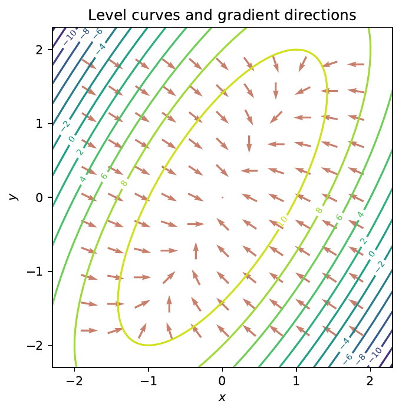
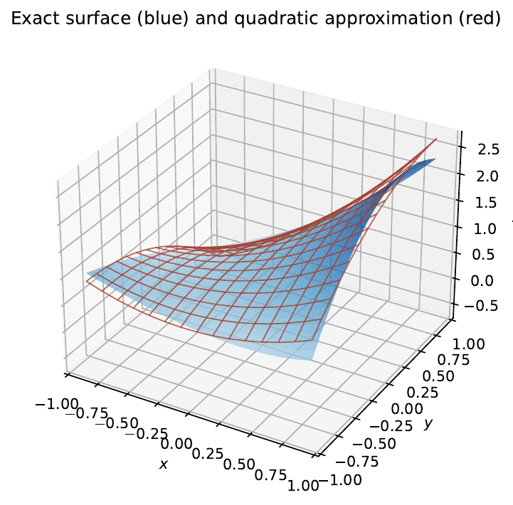
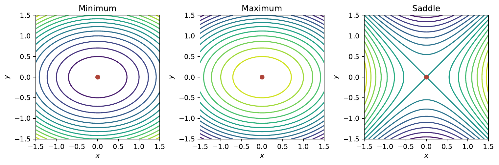
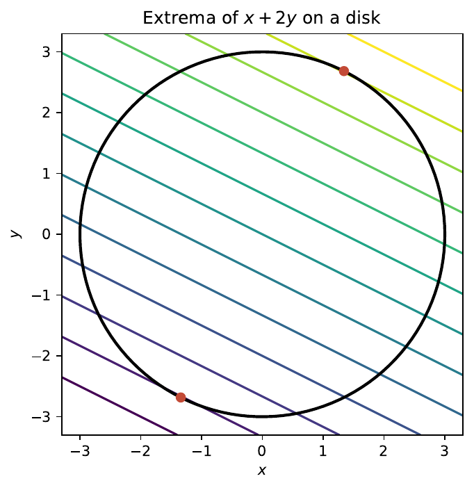
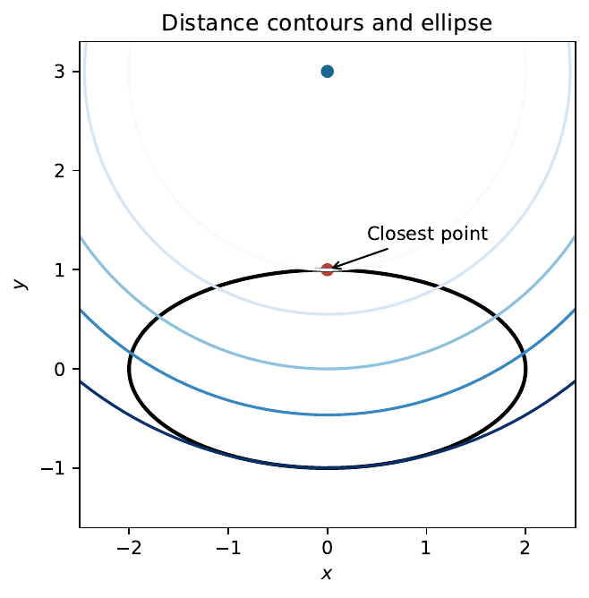
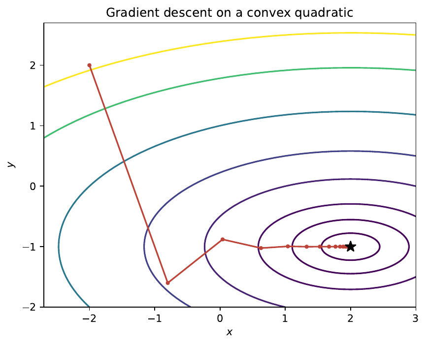
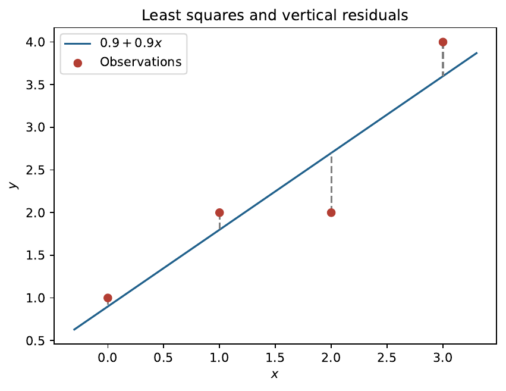

4. Gradients, Taylor Approximations, and Optimization
Learning. After studying this chapter, you should be able to interpret the gradient geometrically; derive tangent-line and tangent-plane approximations; compute second-order Taylor polynomials and Hessian matrices; classify nondegenerate critical points; explain the limitations of the second-derivative test; optimize functions on closed bounded regions; solve constrained problems using substitution and Lagrange multipliers; formulate least-squares models; distinguish local from global optimality; and implement and verify optimization algorithms using R and Python, with analytic verification and numerical interpretation.
Interactive investigation: Gradient and directional derivatives
For f(x,y)=x²+2y² at (1,1), vary the unit direction.
Explore: Which direction gives the largest derivative? When is it zero?
The gradient as a geometric and analytical tool
For a differentiable scalar field \(f:\mathbb{R}^n\to\mathbb{R}\), its gradient is the vector of first partial derivatives, \[\nabla f(\boldsymbol{x})=\left(\frac{\partial f}{\partial x_1},\ldots,\frac{\partial f}{\partial x_n}\right).\] The gradient summarizes the local response to every small change of input. In particular, differentiability at \(\boldsymbol{a}\) means \[f(\boldsymbol{a}+\boldsymbol{h})=f(\boldsymbol{a})+\nabla f(\boldsymbol{a})\cdot\boldsymbol{h}+o(\left\lVert \boldsymbol{h}\right\rVert)\quad\text{as }\boldsymbol{h}\to\boldsymbol{0}.\] This is stronger than the mere existence of partial derivatives: it asserts that a single linear map approximates all sufficiently small displacements.
Theorem — Directional derivative and steepest ascent. If \(f\) is differentiable at \(\boldsymbol{a}\) and \(\boldsymbol{u}\) is a unit vector, then \[D_{\boldsymbol{u}}f(\boldsymbol{a})=\nabla f(\boldsymbol{a})\cdot\boldsymbol{u}.\] When \(\nabla f(\boldsymbol{a})\ne\boldsymbol{0}\), the largest possible directional derivative is \(\left\lVert \nabla f(\boldsymbol{a})\right\rVert\), attained in the direction \(\nabla f(\boldsymbol{a})/\left\lVert \nabla f(\boldsymbol{a})\right\rVert\). The smallest is its negative, attained in the opposite direction.
Proof. Set \(\boldsymbol{h}=t\boldsymbol{u}\) in the differentiability expansion and divide by \(t\). The remainder divided by \(t\) tends to zero because \(\left\lVert \boldsymbol{u}\right\rVert=1\). The extremal values follow from Cauchy–Schwarz: \(\nabla f\cdot\boldsymbol{u}\le\left\lVert \nabla f\right\rVert\left\lVert \boldsymbol{u}\right\rVert=\left\lVert \nabla f\right\rVert\), with equality when the vectors are parallel and point in the same direction.
Example — A spatial concentration field. Let \(C(x,y)=12-2x^2-y^2+2xy\). At \((1,0)\), \(\nabla C=(-4,2)\). The direction of fastest increase is \((-2,1)/\sqrt5\), and the maximum rate of increase is \(2\sqrt5\) concentration units per unit distance. A person moving in direction \((1,1)/\sqrt2\) measures rate \(-\sqrt2\).

Level sets and normal directions
If \(f(\boldsymbol{x})=c\) defines a smooth level surface and \(\boldsymbol{r}(t)\) is a differentiable curve in that surface, then \(f(\boldsymbol{r}(t))=c\). Differentiating gives \(\nabla f(\boldsymbol{r}(t))\cdot\boldsymbol{r}'(t)=0\). Hence the gradient is orthogonal to every tangent direction wherever it is nonzero. For an implicit surface \(F(x,y,z)=0\), the tangent plane at \(\boldsymbol{p}\) is therefore \[\nabla F(\boldsymbol{p})\cdot(\boldsymbol{x}-\boldsymbol{p})=0,\quad\nabla F(\boldsymbol{p})\ne\boldsymbol{0}.\] The condition on the gradient is essential: at singular points, this equation may not describe a unique tangent plane.
Linearization and sensitivity analysis
The linearization of a differentiable function \(f(x,y)\) near \((a,b)\) is \[L(x,y)=f(a,b)+f_x(a,b)(x-a)+f_y(a,b)(y-b).\] It is the height of the tangent plane to the graph \(z=f(x,y)\). It predicts small changes by the total differential \(\,\mathrm{d}f\approx f_x\,\mathrm{d}x+f_y\,\mathrm{d}y\).
Example — Estimating a nonlinear measurement. For \(f(x,y)=\sqrt{4+x^2+y^2}\), linearize at \((0,0)\). Since \(f(0,0)=2\) and both first partial derivatives vanish there, \(L(x,y)=2\). This approximation has no first-order variation, but a second-order approximation will capture the increase in \(f\) away from the origin. At \((0.2,0.1)\), the exact value is \(\sqrt{4.05}\approx2.01246\), while the linear estimate is \(2\).
Checkpoint. A rectangular sheet has dimensions \(x=20\) cm and \(y=30\) cm, each measured with possible error \(\pm0.1\) cm. Use the differential of \(A=xy\) to bound the first-order area error. Explain why the result is an approximation rather than an exact bound.
Second-order Taylor approximations
A linear approximation cannot detect whether a stationary point is a peak, valley, or saddle. Curvature enters through the second partial derivatives. For \(f\) with continuous second derivatives near \(\boldsymbol{a}\), define its Hessian matrix by \[H_f(\boldsymbol{a})=\begin{pmatrix}f_{xx}(\boldsymbol{a})&f_{xy}(\boldsymbol{a})\\f_{yx}(\boldsymbol{a})&f_{yy}(\boldsymbol{a})\end{pmatrix}.\] Under these smoothness conditions, the mixed partial derivatives agree, so the Hessian is symmetric.
Theorem — Second-order Taylor formula. If \(f:\mathbb{R}^n\to\mathbb{R}\) has continuous second derivatives near \(\boldsymbol{a}\), then \[f(\boldsymbol{a}+\boldsymbol{h})=f(\boldsymbol{a})+\nabla f(\boldsymbol{a})^T\boldsymbol{h}+\tfrac12\boldsymbol{h}^T H_f(\boldsymbol{a})\boldsymbol{h}+o(\left\lVert \boldsymbol{h}\right\rVert^2).\]
Proof — Derivation along a line. For fixed \(\boldsymbol{h}\), define \(g(t)=f(\boldsymbol{a}+t\boldsymbol{h})\). The one-variable chain rule gives \(g'(0)=\nabla f(\boldsymbol{a})^T\boldsymbol{h}\) and \(g''(0)=\boldsymbol{h}^TH_f(\boldsymbol{a})\boldsymbol{h}\). Applying the one-variable Taylor formula at \(t=0\), and using continuity of the second derivatives uniformly for small \(\boldsymbol{h}\), yields the stated remainder.
For two variables, the quadratic term expands to \[\tfrac12\bigl(f_{xx}h^2+2f_{xy}hk+f_{yy}k^2\bigr),\] where derivatives are evaluated at the base point and \((h,k)\) is the displacement. The mixed term has coefficient \(2\) because it appears twice in the matrix product.
Example — A quadratic approximation with a cross term. For \(f(x,y)=e^x\cos y+xy\), at \((0,0)\) we have \(f=1\), \(\nabla f=(1,0)\), and \[H_f(0,0)=\begin{pmatrix}1&1\\1&-1\end{pmatrix}.\] Thus \[T_2(x,y)=1+x+\tfrac12x^2+xy-\tfrac12y^2.\] At \((0.1,0.2)\), this predicts \(1.105\); the exact function is \(e^{0.1}\cos(0.2)+0.02\approx1.10314\). The approximation is accurate near the base point but need not improve for arbitrary large displacements.

Computational preview: symbolic Taylor polynomials
Remark — Computational follow-up. We revisit this calculation in the paired R and Python laboratories, where the mathematical model and inputs are kept identical.
The script constructs the quadratic polynomial from the gradient and Hessian rather than relying on separate one-variable expansions.
Critical points and local extrema
Definition. An interior point \(\boldsymbol{a}\) is a critical point of \(f\) if \(\nabla f(\boldsymbol{a})=\boldsymbol{0}\) or if a required first partial derivative does not exist. A local minimum satisfies \(f(\boldsymbol{x})\ge f(\boldsymbol{a})\) for all sufficiently nearby domain points; reverse the inequality for a local maximum.
Theorem — Necessary condition at an interior extremum. If \(f\) is differentiable at an interior local maximum or minimum \(\boldsymbol{a}\), then \(\nabla f(\boldsymbol{a})=\boldsymbol{0}\).
Proof. For each coordinate direction \(\boldsymbol{e}_i\), the one-variable function \(t\mapsto f(\boldsymbol{a}+t\boldsymbol{e}_i)\) has a local extremum at \(t=0\). Fermat’s theorem in one variable gives \(\partial f/\partial x_i(\boldsymbol{a})=0\) for every \(i\).
The converse is false: a critical point may be a saddle, or the function may have a degenerate stationary point not classified by quadratic information.
The two-variable Hessian test
Let \(D=f_{xx}f_{yy}-f_{xy}^2\) at a stationary point of a \(C^2\) function. If \(D>0\) and \(f_{xx}>0\), there is a strict local minimum; if \(D>0\) and \(f_{xx}<0\), a strict local maximum; if \(D<0\), a saddle point. When \(D=0\), the test is inconclusive. These conclusions follow because the sign of the leading quadratic form is determined by the eigenvalues of the symmetric Hessian.
Example — Three distinct stationary geometries. The function \(x^2+2y^2\) has a strict minimum at the origin; \(-x^2-2y^2\) has a strict maximum; and \(x^2-y^2\) has a saddle. All have gradient zero at the origin, but their Hessians have different signs.
Example — Why the inconclusive case matters. At the origin, both \(f(x,y)=x^4+y^4\) and \(g(x,y)=x^4-y^4\) have zero gradient and zero Hessian. Yet \(f\) has a strict local minimum while \(g\) has a saddle. Higher-order terms, inequalities, or explicit path comparisons are needed.

The Hessian test in higher dimensions
At a stationary point in \(\mathbb{R}^n\), a positive definite Hessian implies a strict local minimum; a negative definite Hessian implies a strict local maximum; an indefinite Hessian implies a saddle. Positive semidefinite or negative semidefinite Hessians are inconclusive without additional information. A real symmetric Hessian is positive definite exactly when all its eigenvalues are positive.
Example — A quadratic model in three variables. Consider \(Q(x,y,z)=2x^2+y^2+3z^2+2xy\). Its Hessian is \[H_Q=\begin{pmatrix}4&2&0\\2&2&0\\0&0&6\end{pmatrix}.\] The leading principal minors are \(4\), \(4\), and \(24\), all positive. Sylvester’s criterion shows positive definiteness, hence the origin is a strict local (and global) minimum.
Global optimization on closed and bounded regions
Theorem — Extreme value theorem. A continuous function on a nonempty compact subset of \(\mathbb{R}^n\) attains both a global maximum and a global minimum.
For a closed bounded planar region, candidate locations include interior critical points, boundary critical points found by parametrization or restriction, and corners or nonsmooth boundary points. Comparing only interior stationary values is not sufficient.
Example — A disk-constrained polynomial. Optimize \(f(x,y)=x+2y\) on \(x^2+y^2\le9\). There are no interior stationary points because \(\nabla f=(1,2)\). By Cauchy–Schwarz, \[-3\sqrt5\le x+2y\le3\sqrt5.\] The maximum occurs at \((3/\sqrt5,6/\sqrt5)\) and the minimum at its negative. The boundary can alternatively be parametrized as \((3\cos t,3\sin t)\).

Checkpoint. Find the absolute extrema of \(f(x,y)=x^2+y^2-2x\) on the rectangle \([-1,2]\times[-1,1]\). Explain how you check each edge and corner.
Constrained optimization and Lagrange multipliers
Suppose \(f\) is optimized subject to \(g(x,y)=c\). At a regular constrained extremum, \(\nabla g\ne\boldsymbol{0}\), the objective has zero derivative in every tangent direction to the constraint. Since the gradient of \(g\) is normal to the constraint, the two gradients must be parallel.
Theorem — One equality constraint. If \(f,g\) are continuously differentiable and \(f\) has a constrained local extremum at a point satisfying \(g=c\) and \(\nabla g\ne\boldsymbol{0}\), then there exists \(\lambda\in\mathbb{R}\) such that \[\nabla f=\lambda\nabla g,\qquad g=c.\]
This is a necessary condition, not a guarantee of an extremum. Singular constraint points where \(\nabla g=0\) must be checked separately. In higher dimensions, for independent constraints \(g_1=c_1,\ldots,g_m=c_m\), the condition becomes \(\nabla f=\sum_j\lambda_j\nabla g_j\).
Example — Maximum product with a fixed sum. Maximize \(xy\) subject to \(x+y=10\) with \(x,y\ge0\). The equations \((y,x)=\lambda(1,1)\) imply \(x=y\), so \(x=y=5\) and \(xy=25\). Checking the boundary endpoints \((0,10)\) and \((10,0)\) gives product zero, confirming the global maximum. The nonnegativity constraints are part of the problem, not an automatic consequence of the multiplier equations.
Example — A closest-point problem. Find the point on the ellipse \(x^2+4y^2=4\) closest to \((0,3)\). Minimize squared distance \(f=x^2+(y-3)^2\) rather than its square root. Lagrange’s equations give \[2x=2\lambda x,\qquad2(y-3)=8\lambda y,\qquad x^2+4y^2=4.\] If \(x\ne0\), then \(\lambda=1\) and \(y=-1\), which forces \(x=0\), a contradiction. Thus \(x=0\) and \(y=\pm1\); the nearest point is \((0,1)\) with distance \(2\). Explicit comparison distinguishes minimum from maximum.

Multipliers as sensitivity coefficients
Under suitable regularity and smooth dependence on \(c\), if \(V(c)\) denotes the optimized value of \(f\) subject to \(g=c\), then the multiplier convention \(\nabla f=\lambda\nabla g\) gives \(V'(c)=\lambda\). This can be interpreted as the marginal value of relaxing the constraint. The interpretation requires care when the optimum changes discontinuously, multiple optimizers exist, or regularity fails.
Unconstrained numerical optimization
Symbolic stationary equations are valuable when solvable, but real applications often involve nonlinear expressions for which no elementary solution exists. Numerical methods use an initial guess and repeatedly improve it.
Gradient descent
Given a differentiable objective \(f\), gradient descent updates \[\boldsymbol{x}_{k+1}=\boldsymbol{x}_k-\alpha_k\nabla f(\boldsymbol{x}_k),\] where \(\alpha_k>0\) is the step size. A fixed step that is too large can cause divergence; a very small step can make convergence slow. A zero gradient alone does not certify global optimality.
Example — Quadratic objective. Let \(f(x,y)=(x-2)^2+4(y+1)^2\). Then \(\nabla f=(2(x-2),8(y+1))\) and the unique minimizer is \((2,-1)\). With a fixed step \(\alpha\), the errors update as \(e_{x,k+1}=(1-2\alpha)e_{x,k}\) and \(e_{y,k+1}=(1-8\alpha)e_{y,k}\). Convergence in both coordinates requires \(0<\alpha<1/4\).
Remark — Computational follow-up. We revisit this calculation in the paired R and Python laboratories, where the mathematical model and inputs are kept identical.

Newton’s method and Hessian information
When the Hessian is invertible, Newton’s update for finding a stationary point is \[\boldsymbol{x}_{k+1}=\boldsymbol{x}_k-H_f(\boldsymbol{x}_k)^{-1}\nabla f(\boldsymbol{x}_k).\] In practice, solve a linear system rather than explicitly forming the inverse. Near a nondegenerate minimizer and under standard smoothness assumptions, Newton’s method can converge quadratically. However, an indefinite Hessian can produce a step toward a saddle or maximum, and a singular Hessian prevents the unmodified step.
Remark — Computational follow-up. We revisit this calculation in the paired R and Python laboratories, where the mathematical model and inputs are kept identical.
The optimizer reports an approximate solution. Inspect the termination message, gradient norm, constraints, and sensitivity to the starting point before drawing a mathematical conclusion.
Least squares as an optimization problem
Suppose data \((x_i,y_i)\) are modeled by a line \(\widehat y_i=a+bx_i\). The least-squares objective is \[S(a,b)=\sum_{i=1}^n(y_i-a-bx_i)^2.\] Differentiating and setting both partial derivatives to zero gives the normal equations \[\begin{pmatrix}n&\sum x_i\\\sum x_i&\sum x_i^2\end{pmatrix}\begin{pmatrix}a\\b\end{pmatrix}=\begin{pmatrix}\sum y_i\\\sum x_i y_i\end{pmatrix}.\] If the input values are not all equal, the design matrix has full column rank, the quadratic objective is strictly convex, and the solution is unique. Numerically, QR or singular-value decomposition is generally more stable than forming normal equations explicitly.
Example — A small calibration dataset. For the observations \((0,1)\), \((1,2)\), \((2,2)\), and \((3,4)\), the sample means are \(\bar x=1.5\) and \(\bar y=2.25\). We obtain \[b=\frac{\sum(x_i-\bar x)(y_i-\bar y)}{\sum(x_i-\bar x)^2}=\frac{4.5}{5}=0.9,\qquad a=2.25-0.9(1.5)=0.9.\] The fitted line is \(\widehat y=0.9+0.9x\). The residual sum of squares is \(0.7\).
Remark — Computational follow-up. We revisit this calculation in the paired R and Python laboratories, where the mathematical model and inputs are kept identical.

Optimization in modeling: decisions and limitations
Optimization is useful only when the objective and feasible set represent the scientific question. In health, engineering, and economics, it is important to distinguish mathematical optimality from practical desirability. A model may ignore measurement error, fairness constraints, uncertainty, or safety requirements. Always state units, interpret parameters, and examine whether the optimum is stable under small changes in inputs.
Example — A resource allocation model. A laboratory allocates nonnegative hours \(x\) and \(y\) to two activities. A stylized benefit is \(B(x,y)=6x+4y-x^2-2y^2\) with total time \(x+y\le5\). The unconstrained stationary point is \((3,1)\), which is feasible and yields \(B=11\). Because the Hessian is \(\operatorname{diag}(-2,-4)\), the objective is strictly concave, so this feasible point is the unique global maximizer over the convex feasible region. The mathematical model does not establish that the chosen benefit coefficients are empirically valid.
Additional mathematical examples from the R manuscript
A second-order exponential approximation
For \(f(x,y)=e^{x+2y}\) at \((0,0)\), the gradient is \((1,2)\) and the Hessian is \(\begin{psmallmatrix}1&2\\2&4\end{psmallmatrix}\). Therefore \[T_2(x,y)=1+x+2y+\tfrac12(x+2y)^2.\] At \((0.1,0.05)\) the exact value is \(e^{0.2}\approx1.22140276\), while the second-order prediction is \(1.22\). This model is distinct from the mixed-trigonometric Taylor example developed earlier and is retained to highlight approximation error along a one-dimensional linear combination.
Global extrema on a unit disk
For \(f(x,y)=x+2y\) on \(x^2+y^2\le1\), the gradient \((1,2)\) never vanishes. On the boundary, \((x,y)=(\cos t,\sin t)\), so \(f=\cos t+2\sin t\). The maximum is \(\sqrt5\) at \((1,2)/\sqrt5\) and the minimum is \(-\sqrt5\) at \(-(1,2)/\sqrt5\). The Cauchy–Schwarz inequality provides an independent global proof.
Nonconvexity and multiple optimal solutions
The objective \(f(x,y)=(x^2-1)^2+y^2\) is nonnegative and vanishes at both \((1,0)\) and \((-1,0)\). These are two distinct global minimizers. An algorithm started near one basin may not find the other. We will compare starting values in both languages.
Two equality constraints in three variables
Minimize \(x^2+y^2+z^2\) subject to \(x+y+z=6\) and \(x-y=0\). Substitution gives \(y=x\), \(z=6-2x\), and \(f(x)=6(x-2)^2+12\). The unique constrained minimizer is \((2,2,2)\). This illustrates why multiple constraints require independent constraint gradients in the multiplier method.
Production response and a concave objective
A stylized production response is \[P(x,y)=12x+10y-x^2-2y^2-xy.\] The stationary equations \(2x+y=12\) and \(x+4y=10\) give \((x,y)=(38/7,8/7)\). The Hessian \(\begin{psmallmatrix}-2&-1\\-1&-4\end{psmallmatrix}\) is negative definite, so this point is the unique global maximizer. The coefficients are illustrative, not fitted empirical estimates.
Solving the mathematical problems using R
The companion program code/chapter04_paired.R contains
all of the following calculations. We use base R, optim(),
optimize(), and qr.solve(), avoiding
additional package dependencies.
Taylor approximation and error
f <- function(x,y) exp(x+2*y)
t1 <- function(x,y) 1+x+2*y
t2 <- function(x,y) 1+x+2*y+.5*(x+2*y)^2
print(c(exact=f(.1,.05),linear=t1(.1,.05),
quadratic=t2(.1,.05)))
h <- 10^seq(-3,-1,length.out=25)
plot(h,abs(f(h,h)-t2(h,h)),log="xy",type="b",
xlab="Step size",ylab="Quadratic error")Gradient and Hessian of a convex objective
Consider \(q(x,y)=(x-2)^2+4(y+1)^2+3\). Its unique global minimizer is \((2,-1)\) with value \(3\) because its Hessian is \(\operatorname{diag}(2,8)>0\).
q <- function(p) (p[1]-2)^2+4*(p[2]+1)^2+3
grad <- function(p) c(2*(p[1]-2),8*(p[2]+1))
fit <- optim(c(0,0),q,gr=grad,method="BFGS")
print(c(fit$par,minimum=fit$value))
stopifnot(max(abs(fit$par-c(2,-1)))<1e-5)Nonconvex starts, a disk boundary, and a fixed-sum constraint
nonconvex <- function(p) (p[1]^2-1)^2+p[2]^2
starts <- list(c(-2,1),c(2,1),c(-.7,-1),c(.7,-1))
print(do.call(rbind,lapply(starts,function(s)
c(optim(s,nonconvex,method="BFGS")$par))))
angle <- optimize(function(t) -(cos(t)+2*sin(t)),
c(0,2*pi))
print(c(disk_max=-angle$objective,exact=sqrt(5)))
fixed_sum <- optimize(function(x) -x*(10-x),c(0,10))
print(c(x=fixed_sum$minimum,y=10-fixed_sum$minimum,
product=-fixed_sum$objective))Least-squares estimation and numerical conditioning
x <- c(0,1,2,3); y <- c(1,2,2,4)
X <- cbind(1,x)
print(qr.solve(X,y))
print(coef(lm(y~x)))
stopifnot(max(abs(qr.solve(X,y)-c(.9,.9)))<1e-10)Maximizing the production response
P <- function(p) 12*p[1]+10*p[2]-p[1]^2-2*p[2]^2-p[1]*p[2]
fit <- optim(c(1,1),function(p) -P(p),method="BFGS")
print(c(fit$par,benefit=P(fit$par)))
print(c(exact_x=38/7,exact_y=8/7))Solving the same problems using Python
The Python program code/chapter04_paired.py uses the
same inputs and objectives as the R program. Symbolic differentiation is
added to verify the derivatives analytically.
Taylor approximation and error
import numpy as np
import matplotlib.pyplot as plt
f=lambda x,y:np.exp(x+2*y)
t1=lambda x,y:1+x+2*y
t2=lambda x,y:1+x+2*y+.5*(x+2*y)**2
print(f(.1,.05),t1(.1,.05),t2(.1,.05))
h=np.logspace(-3,-1,25)
plt.loglog(h,abs(f(h,h)-t2(h,h)),'o-')
plt.xlabel('Step size');plt.ylabel('Quadratic error')Symbolic derivatives and numerical minimization
import sympy as sp
from scipy.optimize import minimize
x,y=sp.symbols('x y')
q=(x-2)**2+4*(y+1)**2+3
print([sp.diff(q,z) for z in (x,y)])
print(sp.hessian(q,(x,y)))
fun=lambda p:(p[0]-2)**2+4*(p[1]+1)**2+3
jac=lambda p:np.array([2*(p[0]-2),8*(p[1]+1)])
fit=minimize(fun,[0,0],jac=jac,method='BFGS')
print(fit.x,fit.fun)
assert np.allclose(fit.x,[2,-1],atol=1e-5)The same nonconvex, disk, and fixed-sum problems
from scipy.optimize import minimize, minimize_scalar
nonconvex=lambda p:(p[0]**2-1)**2+p[1]**2
starts=[[-2,1],[2,1],[-.7,-1],[.7,-1]]
print([minimize(nonconvex,s,method='BFGS').x for s in starts])
res=minimize_scalar(lambda t:-(np.cos(t)+2*np.sin(t)),
bounds=(0,2*np.pi),method='bounded')
print('disk maximum',-res.fun,'exact',np.sqrt(5))
res=minimize_scalar(lambda x:-x*(10-x),bounds=(0,10),
method='bounded')
print('fixed-sum optimum',res.x,10-res.x,-res.fun)Least squares and the production response
xx=np.array([0,1,2,3]); yy=np.array([1,2,2,4])
X=np.column_stack([np.ones_like(xx),xx])
beta=np.linalg.lstsq(X,yy,rcond=None)[0]
print('least squares',beta)
assert np.allclose(beta,[.9,.9])
P=lambda p:12*p[0]+10*p[1]-p[0]**2-2*p[1]**2-p[0]*p[1]
fit=minimize(lambda p:-P(p),[1,1],method='BFGS')
print('production optimum',fit.x,'exact',[38/7,8/7])
assert np.allclose(fit.x,[38/7,8/7],atol=1e-4)Comparing R and Python
Both implementations recover the same mathematical optima, but their
optimizer interfaces differ: R’s optim() takes a starting
vector and objective; SciPy’s minimize() provides multiple
algorithms and detailed termination diagnostics. The QR-based
least-squares solver in R and numpy.linalg.lstsq in Python
avoid explicit inversion of \(X^TX\).
Small discrepancies between outputs reflect tolerances and
floating-point arithmetic. Neither numerical agreement nor a success
message proves global optimality; the positive-definite or
negative-definite Hessian arguments provide that guarantee for the
quadratic models.
Real-world application: allocating laboratory time
A laboratory has a total of five hours available for two activities. Consider the illustrative benefit model \(B(x,y)=6x+4y-x^2-2y^2\) subject to \(x\ge0\), \(y\ge0\), and \(x+y\le5\). Its gradient vanishes at \((3,1)\), which satisfies all constraints, and its Hessian \(\operatorname{diag}(-2,-4)\) is negative definite. Thus \(B(3,1)=11\) is the unique global maximum on the feasible region. R and Python can verify the result numerically by minimizing \(-B\); however, the coefficients would require empirical estimation before using the result to schedule real laboratory work. A responsible report would include units, feasibility, sensitivity to the coefficients, and the possible omission of staffing and equipment constraints.
Convexity, optimality, and the geometry of algorithms
Definition — Convex sets and functions. A set \(C\subseteq\mathbb{R}^n\) is convex if \((1-t)\boldsymbol{x}+t\boldsymbol{y}\in C\) whenever \(\boldsymbol{x},\boldsymbol{y}\in C\) and \(0\le t\le1\). A function \(f:C\to\mathbb{R}\) is convex if \[f((1-t)\boldsymbol{x}+t\boldsymbol{y})\le(1-t)f(\boldsymbol{x})+tf(\boldsymbol{y}).\] It is strictly convex when the inequality is strict for distinct points and \(0<t<1\).
Theorem — First-order convexity criterion. Let \(C\) be an open convex set and \(f\) differentiable on \(C\). Then \(f\) is convex if and only if \[f(\boldsymbol{y})\ge f(\boldsymbol{x})+\nabla f(\boldsymbol{x})^T(\boldsymbol{y}-\boldsymbol{x})\qquad(\boldsymbol{x},\boldsymbol{y}\in C).\] Consequently every stationary point of a differentiable convex function is a global minimizer.
Proof. For fixed \(\boldsymbol{x},\boldsymbol{y}\) define \(g(t)=f(\boldsymbol{x}+t(\boldsymbol{y}-\boldsymbol{x}))\). If \(f\) is convex, \(g\) is convex and the secant slope is no smaller than the right derivative at zero: \(g(1)-g(0)\ge g'(0)\). The chain rule gives the inequality. Conversely, apply the supporting-hyperplane inequality at \(\boldsymbol{z}=(1-t)\boldsymbol{x}+t\boldsymbol{y}\) separately to \(\boldsymbol{x}\) and \(\boldsymbol{y}\), multiply by \(1-t\) and \(t\), and add. The gradient terms cancel, giving the convexity inequality.
Theorem — Second-order convexity criterion. If \(f\in C^2(C)\) on an open convex set, \(f\) is convex precisely when \(\boldsymbol{v}^TH_f(\boldsymbol{x})\boldsymbol{v}\ge0\) for all \(\boldsymbol{x}\in C\) and \(\boldsymbol{v}\in\mathbb{R}^n\). A positive definite Hessian everywhere is sufficient for strict convexity, but not necessary.
Proof. Restrict \(f\) to each line segment. Its second derivative is \(g''(t)=\boldsymbol{v}^TH_f(\boldsymbol{x}+t\boldsymbol{v})\boldsymbol{v}\). A twice differentiable one-variable function is convex exactly when its second derivative is nonnegative. If this derivative is strictly positive on each nonconstant segment, strict convexity follows.
Example — Strict convexity without a positive Hessian at every point. The function \(f(x)=x^4\) is strictly convex on \(\mathbb{R}\), yet \(f''(0)=0\). Thus positive definiteness of the Hessian is a sufficient condition, not an equivalence, for strict convexity.
A quantitative convergence bound for gradient descent
Suppose \(f\) has an \(L\)-Lipschitz gradient: \(\|\nabla f(\boldsymbol{x})-\nabla f(\boldsymbol{y})\|\le L\|\boldsymbol{x}-\boldsymbol{y}\|\). The descent lemma states \[f(\boldsymbol{x}+\boldsymbol{h})\le f(\boldsymbol{x})+\nabla f(\boldsymbol{x})^T\boldsymbol{h}+\frac L2\|\boldsymbol{h}\|^2.\] Taking \(\boldsymbol{h}=-\alpha\nabla f(\boldsymbol{x})\) yields \[f(\boldsymbol{x}-\alpha\nabla f(\boldsymbol{x}))\le f(\boldsymbol{x})-\alpha(1-L\alpha/2)\|\nabla f(\boldsymbol{x})\|^2.\] Thus a fixed step \(0<\alpha<2/L\) decreases the objective whenever the gradient is nonzero. This is a descent guarantee, not by itself a global convergence guarantee for a nonconvex objective.
Proof — Descent lemma. Integrate the directional derivative along \(\boldsymbol{x}+t\boldsymbol{h}\): \(f(\boldsymbol{x}+\boldsymbol{h})-f(\boldsymbol{x})=\int_0^1\nabla f(\boldsymbol{x}+t\boldsymbol{h})^T\boldsymbol{h}\,dt\). Subtract \(\nabla f(\boldsymbol{x})^T\boldsymbol{h}\) and apply Cauchy–Schwarz and Lipschitz continuity to bound the remainder by \(\int_0^1 Lt\|\boldsymbol{h}\|^2dt=L\|\boldsymbol{h}\|^2/2\).
Example — Predicting stable steps. For \(q(x,y)=(x-2)^2+4(y+1)^2\), \(H_q=\operatorname{diag}(2,8)\), so \(L=8\). The bound \(0<\alpha<1/4\) exactly matches the coordinatewise stability condition derived earlier. With \(\alpha=1/8\), the \(y\)-coordinate reaches its minimizer in one step, while the \(x\) error is multiplied by \(3/4\) at every iteration.
Constraints with inequalities: first-order conditions
Equality multipliers alone cannot distinguish an active budget from an inactive one. Consider minimizing \(f(\boldsymbol{x})\) subject to differentiable inequalities \(g_i(\boldsymbol{x})\le0\) and equalities \(h_j(\boldsymbol{x})=0\). Under an appropriate constraint qualification, the Karush–Kuhn–Tucker (KKT) conditions at a local minimizer are \[\nabla f+\sum_i\lambda_i\nabla g_i+\sum_j\mu_j\nabla h_j=0,\quad \lambda_i\ge0,\quad g_i\le0,\quad \lambda_i g_i=0,\quad h_j=0.\] The final product condition is called complementary slackness. If a constraint is inactive (\(g_i<0\)), its multiplier must vanish. KKT conditions are generally necessary only under regularity assumptions; in convex problems with affine equalities and suitable constraint qualifications they can also certify global optimality.
Example — A budget-limited quadratic benefit. Maximize \(B(x,y)=6x+4y-x^2-2y^2\) with \(x,y\ge0\) and \(x+y\le3\). The unconstrained optimum \((3,1)\) violates the budget. On the active boundary \(y=3-x\), \[B(x,3-x)=-6+14x-3x^2,\quad 0\le x\le3.\] The unique maximum on the boundary occurs at \(x=7/3\), \(y=2/3\), with benefit \(31/3\). At this point \(\nabla B=(4/3,4/3)\) is parallel to the budget normal \((1,1)\). The budget is active, and both activities remain positive.
Checkpoint. Verify the correct boundary polynomial in the preceding example by direct expansion. Compare the benefit at the interior stationary point of the boundary, the endpoints \((0,3)\) and \((3,0)\), and any feasible interior stationary points. Explain the economic meaning of the positive budget multiplier.
Numerical conditioning and reproducibility
Why solving normal equations can lose accuracy
If \(X\) has full column rank, the least-squares estimator solves \(X^TX\boldsymbol{\beta}=X^T\boldsymbol{y}\). In the Euclidean condition number, \(\kappa_2(X^TX)=\kappa_2(X)^2\). Therefore forming \(X^TX\) can amplify sensitivity when predictor columns are nearly linearly dependent. QR factorization avoids squaring the condition number; singular-value decomposition also reveals rank deficiency. The normal equations remain important for derivation but need not be the preferred numerical algorithm.
Example — Nearly redundant predictors. Suppose a regression includes columns \(x_i\) and \(x_i+10^{-6}z_i\). Both may convey almost the same information. Small measurement changes can lead to large coefficient changes even when predictions remain comparatively stable. Centering or scaling variables does not eliminate exact linear dependence, and an optimizer’s convergence message does not establish parameter identifiability.
A verification checklist for numerical optimization
For every reported numerical solution, identify the objective and units, the feasible domain, the initial value, the algorithm and tolerances, the termination condition, the final gradient or KKT residual, and an independent analytic or numerical check. For nonconvex models, compare multiple starting values. For constrained models, report the constraint residuals. Use fixed random seeds for stochastic experiments and retain the full script in the project directory.
Extended paired laboratory: projected gradient descent
Consider minimizing \(q(x,y)=(x-2)^2+4(y+1)^2\) subject to \(x\ge0\) and \(y\ge0\). The unconstrained minimizer \((2,-1)\) is infeasible, so the constrained minimizer is \((2,0)\), with \(q(2,0)=4\). A projected gradient method alternates a gradient step with Euclidean projection onto the nonnegative quadrant: \[\boldsymbol{x}_{k+1}=\Pi_{\mathbb{R}^2_+}\bigl(\boldsymbol{x}_k-\alpha\nabla q(\boldsymbol{x}_k)\bigr),\qquad \Pi_{\mathbb{R}^2_+}(a,b)=(\max(a,0),\max(b,0)).\] For \(\alpha=1/8\) the iterates converge to \((2,0)\). Both programs below use the same starting point and iteration count.
R implementation
q <- function(z) (z[1]-2)^2+4*(z[2]+1)^2
grad <- function(z) c(2*(z[1]-2),8*(z[2]+1))
z <- c(0,3); alpha <- 1/8
path <- matrix(z,nrow=1)
for (k in 1:100) {
z <- pmax(0,z-alpha*grad(z))
path <- rbind(path,z)
}
print(c(x=z[1],y=z[2],objective=q(z)))
stopifnot(max(abs(z-c(2,0)))<1e-10)
plot(path[,1],path[,2],type='o',pch=16,
xlab='x',ylab='y',main='Projected gradient iterates')Python implementation
import numpy as np
q = lambda z: (z[0]-2)**2 + 4*(z[1]+1)**2
grad = lambda z: np.array([2*(z[0]-2),8*(z[1]+1)])
z = np.array([0.,3.]); alpha = 1/8
path = [z.copy()]
for k in range(100):
z = np.maximum(0,z-alpha*grad(z))
path.append(z.copy())
print('solution:',z,'objective:',q(z))
assert np.allclose(z,[2,0],atol=1e-10)Interpretation
The feasible boundary changes the solution from \((2,-1)\) to \((2,0)\). The \(y\) component is projected to zero, while the \(x\) component approaches two geometrically. The algorithm is not a substitute for the analytic proof: because \(q\) is strictly convex and the feasible quadrant is convex, this feasible minimizer is unique.
Checkpoint. Modify the code to use \(\alpha=1/16\) and \(\alpha=1/5\). Compare convergence speed and explain why the projection does not remove the need to choose a sensible step size.
Additional exercises: rigorous optimization and verification
Prove that the intersection of two convex sets is convex. Give an example of a union of convex sets that is not convex.
Show from the definition that every affine function is both convex and concave.
For \(f(x,y)=x^4+2y^2\), establish strict convexity without claiming its Hessian is positive definite everywhere.
Find the global minimum of \(f(x,y)=3x^2+2xy+2y^2-8x+4y\) by completing the square and by solving the gradient equations.
Determine the Lipschitz constant \(L\) of the gradient for the quadratic in the preceding problem and a sufficient interval of fixed descent steps.
Solve \(\min\{(x-3)^2+(y+1)^2:x\ge0,\ y\ge0\}\) analytically and by projected gradient descent.
Maximize \(6x+4y-x^2-2y^2\) subject to \(x,y\ge0\) and \(x+y\le3\); identify all active constraints and verify the KKT conditions.
Derive the normal equations for weighted least squares \(\sum_i w_i(y_i-a-bx_i)^2\), with strictly positive weights.
Explain with a numerical example why a small gradient norm alone need not establish that a point is a minimum.
Design a comparison of three starting values for a nonconvex objective, documenting the objective values and stopping criteria in both R and Python.
Chapter summary
The gradient determines first-order sensitivity and steepest ascent. The Hessian records second-order curvature and classifies nondegenerate stationary points. Compactness ensures existence of global extrema for continuous functions, but candidates on the boundary must be examined. Lagrange multipliers characterize regular constrained extrema. Numerical optimizers are powerful computational tools, but they require checks for convergence, feasibility, and global validity. Least squares is an important application in which calculus leads directly to statistical estimation.
Exercises
Conceptual and geometric reasoning
Explain why \(\nabla f\) is normal to a regular level curve, and identify the hypothesis needed for the argument.
Find the fastest-increase direction for \(f(x,y)=x^2+3xy+2y^2\) at \((1,-1)\).
Find the directional derivative of \(f(x,y,z)=xyz+x^2\) at \((1,2,-1)\) in the direction \((2,-1,2)\).
Find the tangent plane to \(x^2+2y^2+3z^2=12\) at \((1,2,1)\), and check that the point lies on the surface before proceeding.
Explain why a function may have all first partial derivatives at a point but fail to have a linear approximation there.
Use differentials to estimate the change in \(f(x,y)=\log(x^2+y^2)\) near \((1,1)\) when \(x\) increases by \(0.02\) and \(y\) decreases by \(0.01\).
Derive the second-order Taylor polynomial of \(e^{x+y}\) at the origin.
Derive the second-order Taylor polynomial of \(\sin x\cos y\) at \((0,0)\). Explain why some terms vanish.
Compute the Hessian of \(f(x,y)=x^3y+\cos(xy)\).
For a symmetric \(2\times2\) Hessian, explain why a negative determinant implies directions of both positive and negative quadratic curvature.
Classify the stationary points of \(f(x,y)=x^2+4y^2-2x+8y\).
Classify the stationary points of \(f(x,y)=x^2-4y^2+2xy\).
Determine the local behavior of \(f(x,y)=x^4+y^4\) at the origin despite its vanishing Hessian.
Determine the local behavior of \(f(x,y)=x^3+y^2\) at the origin. Explain why the Hessian test is inconclusive.
Find and classify all critical points of \(f(x,y)=x^3-3x+y^2\).
Find the stationary point of \(f(x,y,z)=x^2+y^2+z^2+xy-2z\) and prove it is a global minimum.
Global and constrained optimization
Find absolute extrema of \(f(x,y)=x+y\) on \(x^2+y^2\le4\).
Find absolute extrema of \(f(x,y)=x^2+y^2\) on the triangle with vertices \((0,0)\), \((2,0)\), and \((0,3)\).
Find absolute extrema of \(f(x,y)=xy\) on the square \([-1,1]^2\).
Maximize \(xy\) subject to \(x+2y=12\) and \(x,y\ge0\).
Find extrema of \(x^2+2y^2\) subject to \(x^2+y^2=1\).
Find the points on \(x^2+4y^2=4\) closest to and farthest from the origin.
Maximize \(xyz\) for nonnegative \(x,y,z\) with \(x+y+z=12\).
Find the point on the plane \(x+2y+2z=9\) closest to the origin.
Discuss why the Lagrange multiplier condition may fail to detect extrema at singular constraint points, using \(g(x,y)=x^2+y^2=0\).
Optimize \(f(x,y)=x^2+y^2\) subject to \(x+y=1\) and interpret the multiplier as the constraint value changes.
Python, modeling, and numerical methods
Use SymPy to compute the gradient and Hessian of \(e^{xy}+x^2y\); verify the mixed partial derivatives agree.
Plot contours and gradient arrows for \(f(x,y)=2x^2+xy+3y^2\) and explain their orientation.
Compare a quadratic Taylor approximation to \(\cos x\cos y\) at the origin for displacements of length \(0.1\), \(0.5\), and \(1\).
Implement gradient descent for \((x-3)^2+9(y+1)^2\). Find experimentally a stable fixed step and compare with a bound derived from the Hessian eigenvalues.
Use SciPy to minimize the Rosenbrock function \((1-x)^2+100(y-x^2)^2\) from at least three starting points. Explain why a returned success flag alone is not a global proof.
Fit a least-squares line to the data \((0,1),(1,2),(2,2),(3,4)\) using both symbolic normal equations and
numpy.linalg.lstsq.Generate synthetic data \(y=2+3x+\varepsilon\) with a fixed random seed, fit a line, and explain the effects of noise and sample size.
For \(f(x,y)=x^4+y^4-2x^2-2y^2\), numerically locate several stationary points. Classify them analytically and investigate sensitivity to initialization.
Verify the ellipse closest-point example using a one-parameter boundary parametrization and numerical minimization.
Write a short critique of an optimization model of your choice, discussing units, constraints, uncertainty, and whether the objective measures what the decision maker actually values.
Chapter project: optimize a resource allocation model
Question. How should two limited resources be allocated when benefits exhibit diminishing returns and a shared budget imposes a constraint? Study \[U(x,y)=8x+6y-x^2-2y^2-xy,\quad x,y\ge0,\quad 2x+y\le8.\]
Derive the gradient and Hessian and determine whether the objective is concave.
Find the unconstrained stationary point. Check its feasibility against all constraints.
Parametrize the active boundary \(2x+y=8\) and analyze the resulting one-variable objective; also check the coordinate axes and vertices.
Solve the constrained problem using R and Python. If a solver supports constraints, document its algorithm and tolerance; otherwise eliminate one variable on each boundary segment.
Produce comparable contour plots with the feasible region and optimal point labeled.
Perturb the coefficients of \(U\) by 10% and assess sensitivity of the allocation and optimal benefit.
Submit a report containing derivations, source code in both languages, plots, numerical comparison, and limitations of the model.
Suggested rubric (100 points): mathematical formulation and proof (30); R implementation (20); Python implementation (20); figures and reproducibility (15); interpretation and limitations (15).